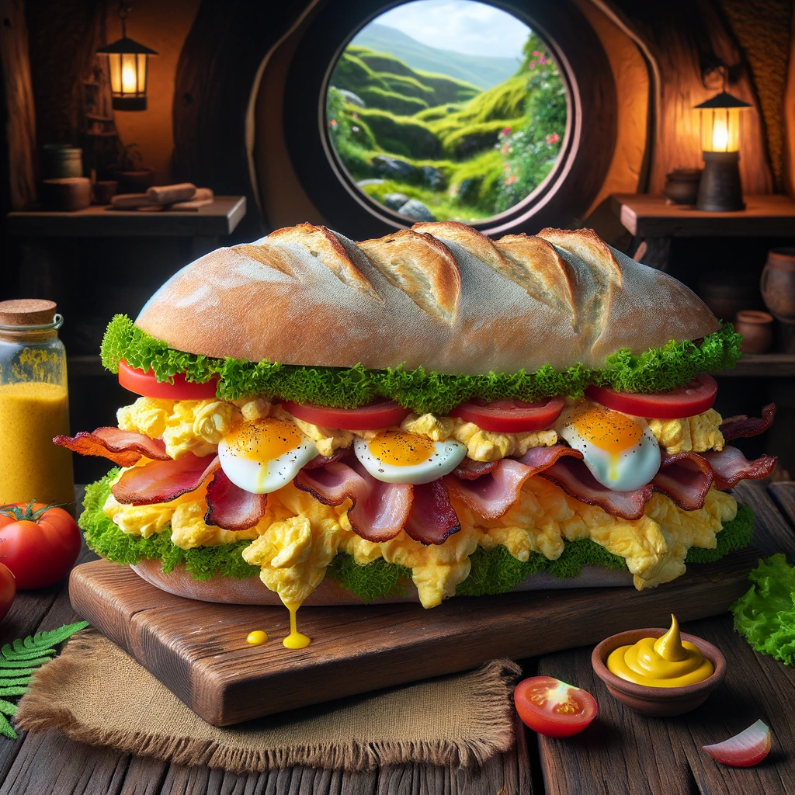

The Hobbit's Second Breakfast Sandwhich Recipe

Ingredients
Serves four
- 1 largue baguette
- 3 eggs
- 6 slices of bacon
- 1 tomato, sliced
- Lettuce leaves
- 1 small wheel of cheese (Brie or Cheddar)
- Mustard (for that Shire Sting)
Steps
- Fry bacon to crispy perfection, set aside on some paper towels to drain.
- Scramble eggs with a dash of courage.
- Slice baguette lengthwise, layer with lettuce, tomato, and cheese.
- Add bacon and scrambled eggs.
- Generously apply mustard, close the sandwich, and cut into hobbit-sized portions.